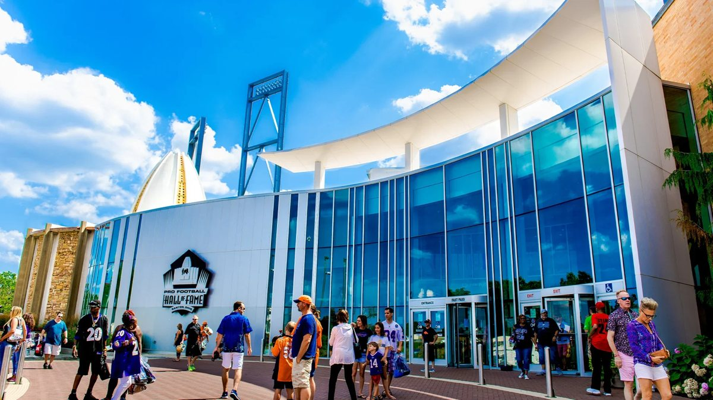
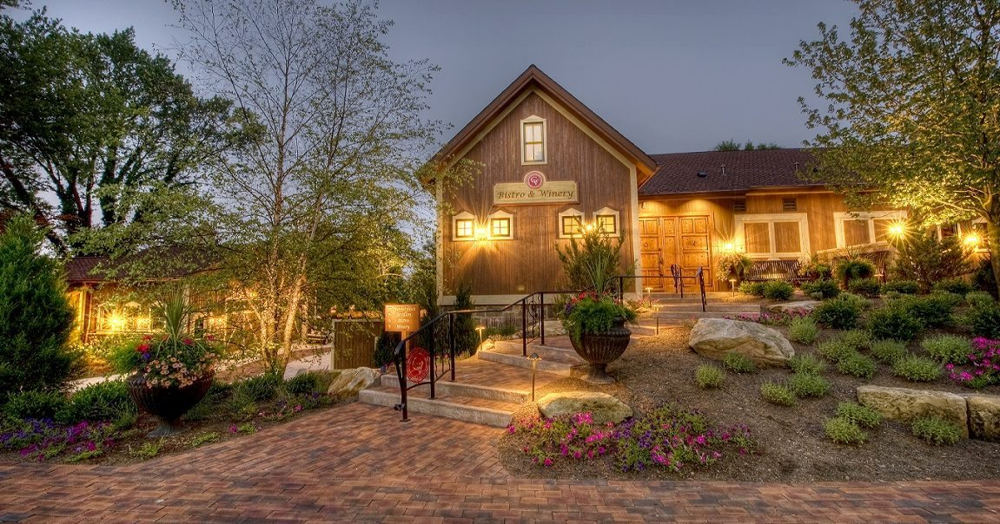
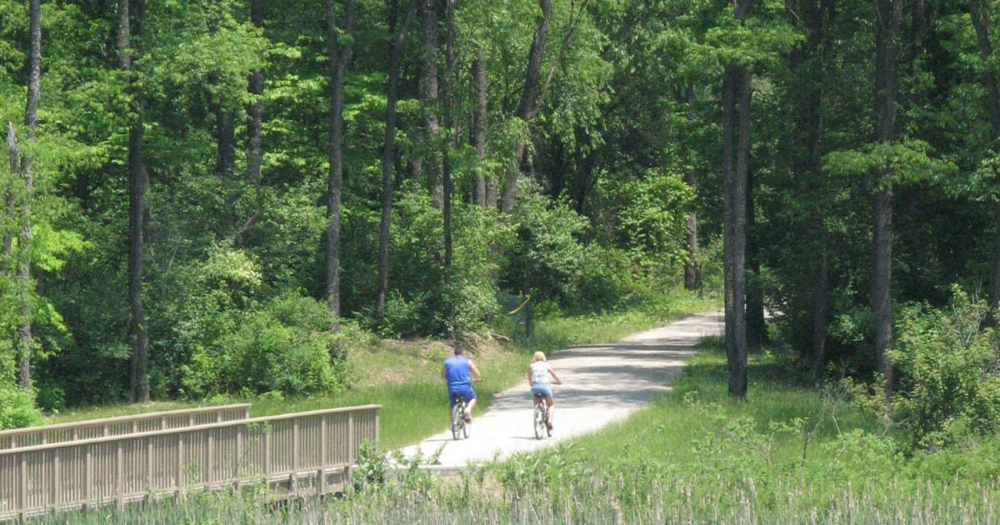

Canton Football history
Pro Football Hall of Fame
Step inside football history, explore the Hall of Fame Gallery and discover the players and moments that shaped the game.

YOUR NEIGHBORHOOD GUIDE
SpringHill Suites Canton
Football history, museums, local dining and shopping. Discover Canton and Stark County from your suite.
Make a little room for discovery.
Landmarks, museums and memorable places in the area and beyond.

Canton Football history
Step inside football history, explore the Hall of Fame Gallery and discover the players and moments that shaped the game.
Canton History & science
Combine presidential history, local heritage and hands-on science in one visit. Check the museum’s current programs and planetarium schedule.
North Canton / Green Aviation history
See historic aircraft up close, explore aviation exhibits and learn the stories behind them. An engaging stop near Akron-Canton Airport.
Downtown Canton Art & culture
Browse changing exhibitions and a collection known for American works on paper and ceramics. Look for classes and special programs during your stay.
Explore dates, discover local events and plan your stay with our interactive calendar.
Explore the events calendar ↗Good food. Great company.
From a quick bite to a special evening, find a table that fits your plans.

Canton Italian dining & wine
Dine in a restored barn on the Gervasi estate, with Italian cuisine and wines to explore. A lovely option for a celebratory evening.
North Canton & Jackson Township Upscale casual
Enjoy seasonal dishes in an inviting, upscale-casual setting. Choose the North Canton or Jackson Township location for menus and reservations.
North Canton Shareable plates
Meet over shareable plates and drinks at this local kitchen and bar. An easy choice for a relaxed dinner with friends or family.
North Canton / The Strip Lebanese-American dining
Find Lebanese-American favorites, including hummus, salads and pita wraps. Check the North Canton location for its current menu and hours.
Stay a little. Explore a lot.
Fresh air, local shops and easy ways to make the most of your time here.

Perry Township Trails & lake time
Walk wooded trails, enjoy the lake and explore the park’s nature offerings. Seasonal paddling rentals make this a great warm-weather outing.
Canton / Belden Village Shopping & entertainment
Browse national retailers and local shops, grab a bite and explore entertainment options. Check the directory for individual store and restaurant hours.
Downtown Canton Movies & live shows
Catch a film, concert or special performance inside Canton’s historic theater. See what’s playing and reserve your tickets directly with the venue.
Jackson Township Nature & boardwalks
Explore an unusual wetland landscape along designated trails and boardwalks. Check preserve rules before visiting; pets are not permitted.
A mix of nearby favorites and regional outings. Check venue websites for current hours, reservations, tickets and seasonal access before traveling. Photos show featured destinations; menus and experiences may change. Guide reviewed October 28, 2026.